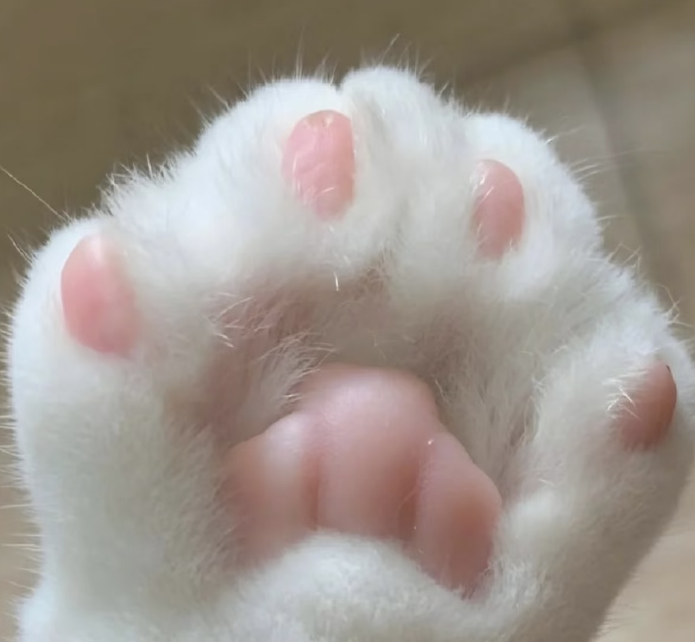
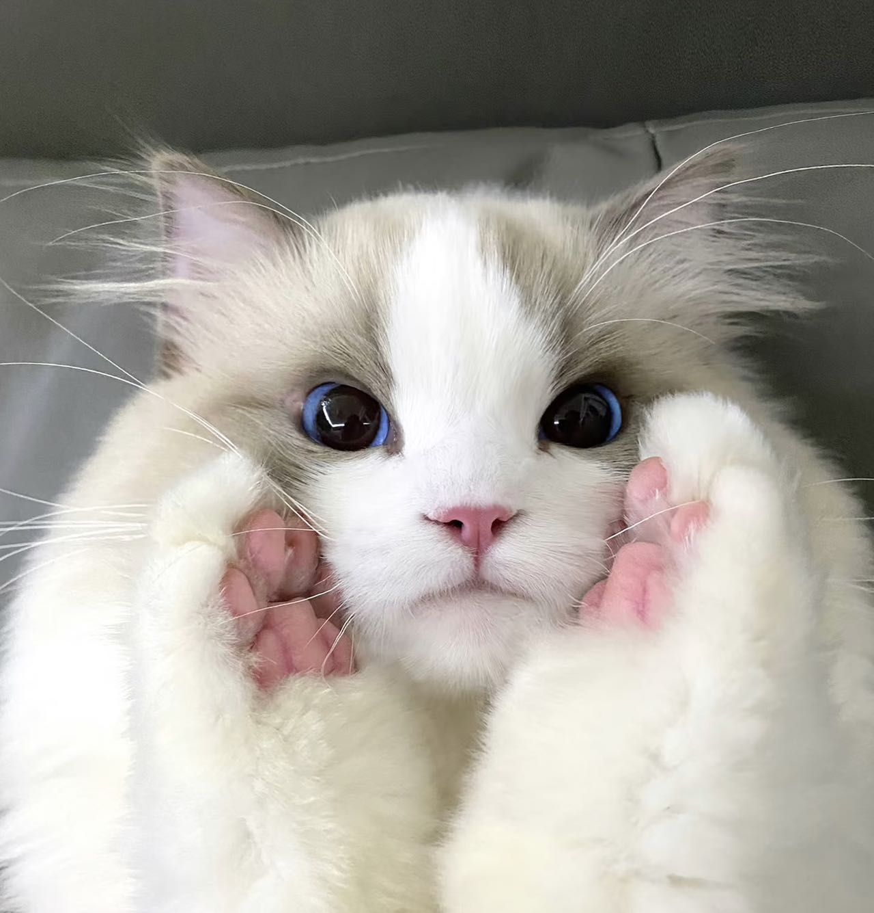
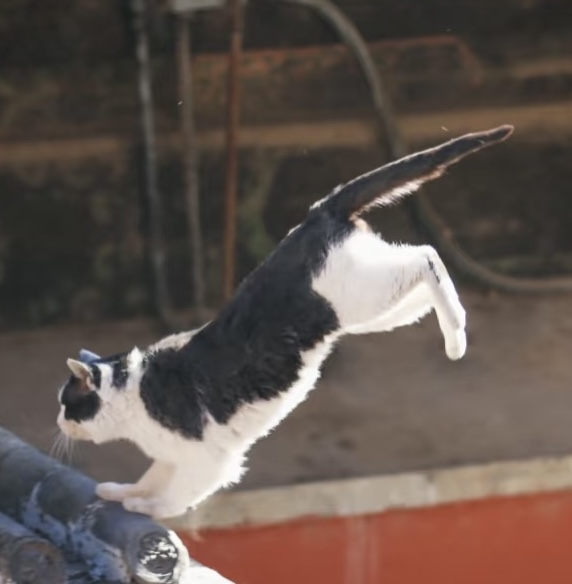
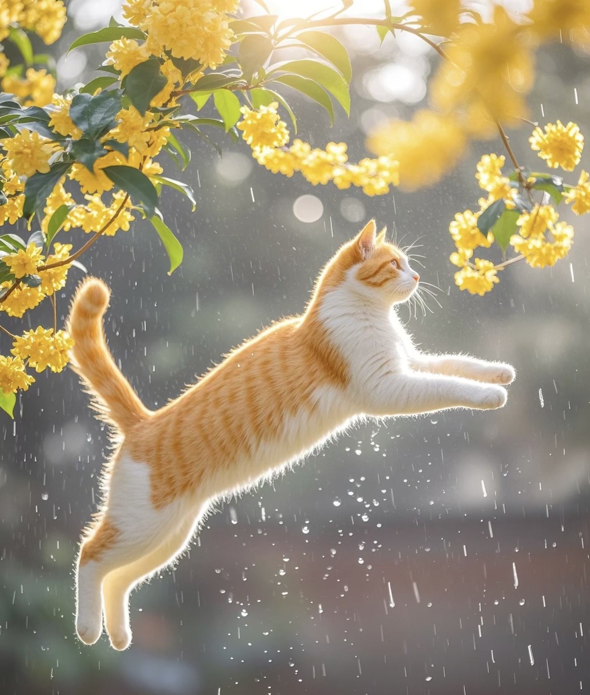
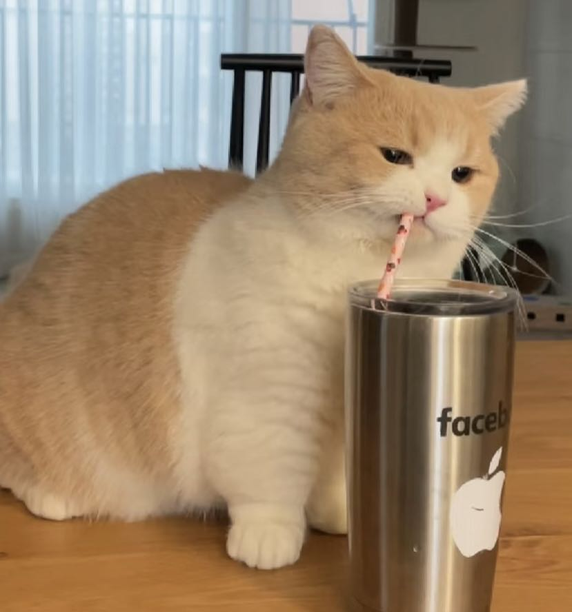
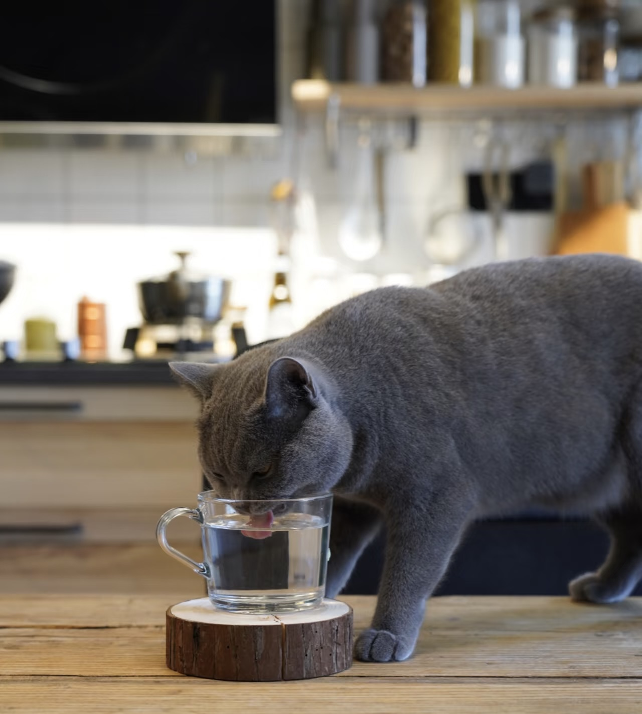

As all we know, cat is a popular kind of domesticated animal for human to raise. In this page we just talk about a few features which we are interested in but not well-known.
And we just talk about the domestic cat >_<
Claw
Put your mouse here to show the information
click the button right to show the information
CLAW
Cats could easily take out and hide their claws whenever they want. In normal cases, they don't take their claws out, just hide in the far which could prevent touching which would damage the claw, so that they could keep their claws sharp.
Almost every cat has 5 claws on the front paws and 4 on the rear. But actually cats also have polydactyly on the front paws.
Balance
Put your mouse here to show the information
click the button right to show the information
BALANCE
Cats are always famous for the myth which said cats have 9 lives because when they're falling down from high buildings, they never hurt any.
In short, when a cat falls down, they have ability to rotate their head and its body, finally let the legs facing the ground.
And what also benefit is they are light, or they cannot rotate their bodies so easily.
Drinking
Put your mouse here to show the information
click the button right to show the information
DRINKING
Like dogs, the cheeks' shape lead to the difficult of the cats to drink the water.
But what can prevent this clever animal? When they are drinking, they use their lips to take the waters into their mouth four times per second. It's fast isn't it? And then they gain the right to live on.
